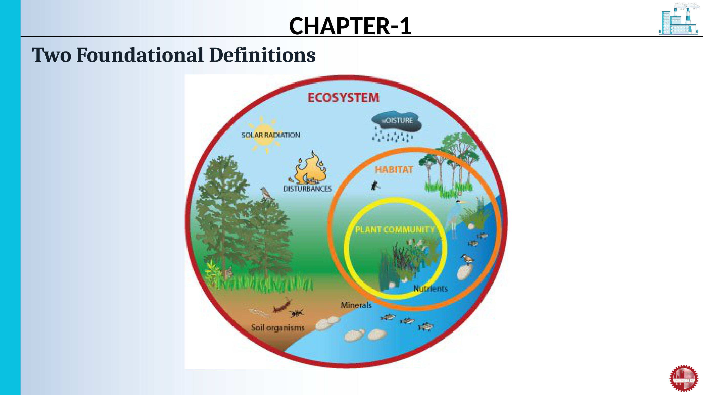

Chapter 1 introduces the foundational concepts of environmental management: the definition of environment, its components (biotic and abiotic), the four types of pollution in Bangladesh, conservation principles, and the objectives of environmental management (EM).
The environment refers to everything that surrounds an organism — both living (biotic) and non-living (abiotic) components that affect the life and activities of that organism.
| Component Type | What It Includes | Examples |
|---|---|---|
| Biotic (Living) | All living organisms | Plants, animals, bacteria, fungi, humans |
| Abiotic (Non-living) | Physical and chemical components | Soil, water, air, sunlight, temperature, minerals |
| Component | Definition |
|---|---|
| Atmosphere | The gaseous envelope surrounding Earth; provides air for breathing and shields from UV radiation |
| Hydrosphere | All water on, under, and above Earth's surface; oceans, rivers, groundwater, glaciers |
| Lithosphere | The solid outer crust of the Earth; rocks, minerals, soil |
| Feature | Ecosystem | Habitat |
|---|---|---|
| Scope | Entire community of organisms + non-living environment | Specific place where one species lives |
| Focus | Interactions, energy flows, nutrient cycles | Physical location and conditions for a species |
| Biotic + Abiotic? | Both, and their interactions | Primarily the physical/abiotic environment |
| Species-specific? | No — covers all species in the area | Yes — defined for a particular species |
| Analogy | Like a whole city with all its residents and infrastructure | Like one person's home address |
| Example | Sundarbans mangrove ecosystem | Royal Bengal tiger's habitat within the Sundarbans |

Ecosystem contains the Habitat — concentric circles model
Pollution is the introduction of harmful substances or conditions into the environment that cause adverse effects. In Bangladesh, four main types of pollution are addressed:
| Type | Main Sources in Bangladesh | Key Pollutants | Primary Effects |
|---|---|---|---|
| 🌫️ Air Pollution | Vehicle exhaust, brick kilns, power plants, industrial chimneys, burning of crop residue | CO, CO₂, SO₂, NOₓ, particulate matter (PM2.5), unburned hydrocarbons (UHC) | Respiratory disease, smog, acid rain, climate change |
| 💧 Water Pollution | Industrial effluents (textile, tannery), untreated sewage, agricultural runoff (fertilizers, pesticides), oil spills | Heavy metals (Pb, Cr), BOD, suspended solids, nitrates, phosphates, arsenic (groundwater) | Disease, fish kills, ecosystem damage, drinking water crisis |
| 🌍 Soil Pollution | Improper solid waste disposal, industrial sludge dumping, excessive pesticide use, oil leakage | Heavy metals, persistent organic pollutants (POPs), plastics, chemical waste | Loss of soil fertility, groundwater contamination, food chain contamination |
| 🔊 Noise Pollution | Traffic, construction, industrial machinery, loudspeakers, aircraft, generator sets | Sound measured in decibels (dB); harmful above 85 dB continuous exposure | Hearing loss, stress, sleep disturbance, cardiovascular effects |
Conservation means the careful management and protection of the natural environment and its resources. The goal is to prevent exploitation, destruction, and neglect of natural resources while still allowing sustainable use.
| Pillar | Meaning |
|---|---|
| Prevention | Preventing the unnecessary destruction or degradation of natural resources and ecosystems |
| Preservation of biodiversity | Protecting the variety of species and ecosystems so future generations inherit a rich natural world |
| Sustainable use | Balancing resource use so current needs are met without compromising the ability of future generations to meet their needs |
| Type | Description | Example |
|---|---|---|
| In-situ | Conservation in the natural habitat | National parks, wildlife sanctuaries, Ramsar sites |
| Ex-situ | Conservation outside the natural habitat | Zoos, botanical gardens, seed banks, gene banks |
Environmental Management (EM) is the deliberate effort by organizations and governments to minimize negative environmental impacts and maximize sustainable use of resources. Five key objectives:
| # | Objective | Explanation |
|---|---|---|
| 1 | Reduce pollution | Minimize air, water, soil, and noise pollution from industrial and human activities |
| 2 | Conserve natural resources | Ensure sustainable extraction and use of minerals, water, forests, and biodiversity |
| 3 | Protect human health | Prevent environmental hazards that cause disease, injury, or death to people |
| 4 | Maintain ecological balance | Preserve the functioning of ecosystems so natural processes (water cycle, nutrient cycle) continue |
| 5 | Ensure sustainable development | Balance economic growth with environmental protection so development can continue long-term |
An Ecosystem is the whole community of living organisms (plants, animals, microbes) interacting with each other AND with the non-living environment (soil, water, sunlight, air) in a specific area. It encompasses all biotic and abiotic components and the energy flows between them. Examples: tropical rainforest ecosystem, coral reef ecosystem, haor ecosystem.
A Habitat is the specific natural environment where a particular species lives — the physical space that provides the food, water, shelter, and space that one species needs to survive and reproduce. It is species-specific and defined primarily by physical conditions. Examples: the Bengal tiger's habitat is dense tropical forest; the Irrawaddy dolphin's habitat is freshwater rivers; the crab-plover's habitat is tidal mudflats.
Key difference: An ecosystem covers ALL species and their interactions in an area, while a habitat is the home of ONE specific species. Using an analogy: an ecosystem is like a whole city (all residents + infrastructure), while a habitat is like one person's house (specific to them).
The five main objectives of Environmental Management are:
The four main types of pollution are: